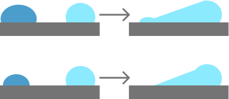
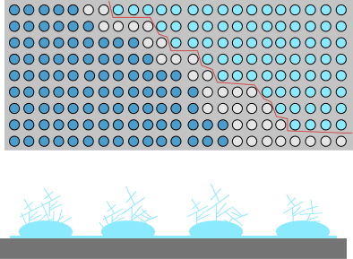

To be able to model frost formation, it is important to
first understand the physics behind how these frost
particles form in nature. In a recent
review\cite{frostFormation}, this physics is presented and
the condensation frosting process is broken into 5 stages:
(i) supercooled condensation, (ii) onset of freezing, (iii)
frost halos, (iv) interdroplet ice bridging and dry zones,
and (v) percolation clusters and frost densification.
Note that while these stages are being described separately,
a lot of these processes happen in parallel rather than
sequentially.
Supercooled Condensation
For frost formation to begin, there must be a surface with
water vapors surrounding it. The temperature of the surface
must be below the dew point, which is the temperature at
which water condenses. However, this is not a sufficient
condition; condensation involves the formation of new
interfaces, which needs a certain degree of supersaturation
in the surrounding air. This necessary condition can be
mathematically calculated using the principles of
thermodynamics and estimating the Gibbs free energy. This
can be interpreted as subcooling, or simply a temperature
lower than the dew point. There is also a possibility of
desublimation, where the water vapor directly freezes to ice
and skips the liquid condensation stage.
Once water droplets start to form and grow, the distance
between neighboring water droplets decreases and their vapor
profiles start to overlap as shown in figure
\ref{fig:stage-1}. This results in a temporary decrease in
the rate of water droplet growth. However, as the droplets
keep growing they start to merge or coalesce. A large number
of coalescence events results in the formation of thin water
layer and accelerated growth.
Schematic showing the supercooled condensation
stage. You can see the individual water droplets
growing.
Onset of Freezing
Now, we zoom into a single water droplet to understand how
the freezing process begins. Just like the condensation
process, the temperature needs to be below the freezing
point, but that is not a sufficient condition by itself. A
certain degree of subcooling is necessary for the formation
of new interfaces, which can be calculated using the Gibbs
free energy.
The freezing inside the droplets begins as a probabilistic
nucleation event. When a large number of these embryo form,
it results in a large release of latent heat, and this stage
is called recalescence. The droplets is now a mixture of
frozen nuclei and liquid water, and is analogous to an
\textit{ice slushy}. This stage is followed by a freeze
front propagation, which starts from the solid surface where
the water droplet is attached and moves away towards the
air. This typically ends in a pointy tip. This process is
illustrated in figure \ref{fig:stage-2}.
Schematic showing the onset of freezing inside a
water droplet. The four drops shown are in the
condensed liquid (blue), recalescence (teal),
ice front propagation, and frozen droplet (cyan)
stages respectively.
Frost Halos
An interesting phenomenon observed during the formation of
frost is halos around the droplets during the recalescence
stage. As we know, in this stage, the temperature of the
droplet increases to the freezing temperature, and this
results in some water vapor escaping the droplets. Given the
right thermodynamic conditions, these micro droplets can
condense on the surface around the \textit{ice slushy},
forming a ring or halo of liquid water. It is also possible
that the water vapor desublimes to form an ice halo.
Although this is mathematically possible, these
desublimation halos are yet to be verified experimentally.
Figure \ref{fig:stage-3} shows this process of formation of
frost halos.
Schematic showing the formation of frost halos.
The arrows represent the water vapor leaving the
drop in the recalescence stage. The two figures
show condensation and desublimation halos
respectively.
Interdroplet Ice Bridging and Dry Zones
As water droplets, the vapor pressure in the neighboring
region decreases. Due to this, they pull water vapor from
neighboring droplets which are still in the recalescence
stage, which are releasing water vapors for the frost halos.
When this flow of water vapor from the recalescence to ice
droplets touches the ice, it results in immediate freezing
of the the water vapor and the recalescence droplet. This
phenomenon is referred to as ice bridging, and it causes an
accelerated growth of ice formation.
As the water vapors move towards the ice particles, it is
also possible that the recalescence droplets evaporates
completely before the water vapors reach the ice. This
causes the formation of dry zones at the location of the
recalescence droplet, which are devoid of water and water
vapor.
Ice bridging and dry zone formation is shown in figure
\ref{fig:stage-4}

Schematics showing interdroplet ice bridging
(above) and dry zone formation (below). Note how
the release of water vapor from the recalescence
water droplets results in a decrease of size or
complete evaporation.
Percolation Clusters and Frost Densification
The ice bridging phenomena discussed before results in a
chain reaction as more and more ice droplets are formed. The
phenomenon percolates through the entire cluster forming ice
bridges or dry regions depending on whether these bridging
attempts succeed or not. Once an interconnected ice network
is formed throughout the cluster, water vapor can now
condense outside the plane on top of the droplets. This
increases the mass and, hence, density of the frost
particles. These two phenomena are shown in figure
\ref{fig:stage-5}.

Schematics showing the formation of percolation
clusters (above) and frost densification
(below). Notice the formation of dry regions
(white) as the percolation clusters form.